قطوط و الوحش المتعب
تأليف : شام أيمن عواد ✨
فلسطينية ✨
مواليد 2015 ✨
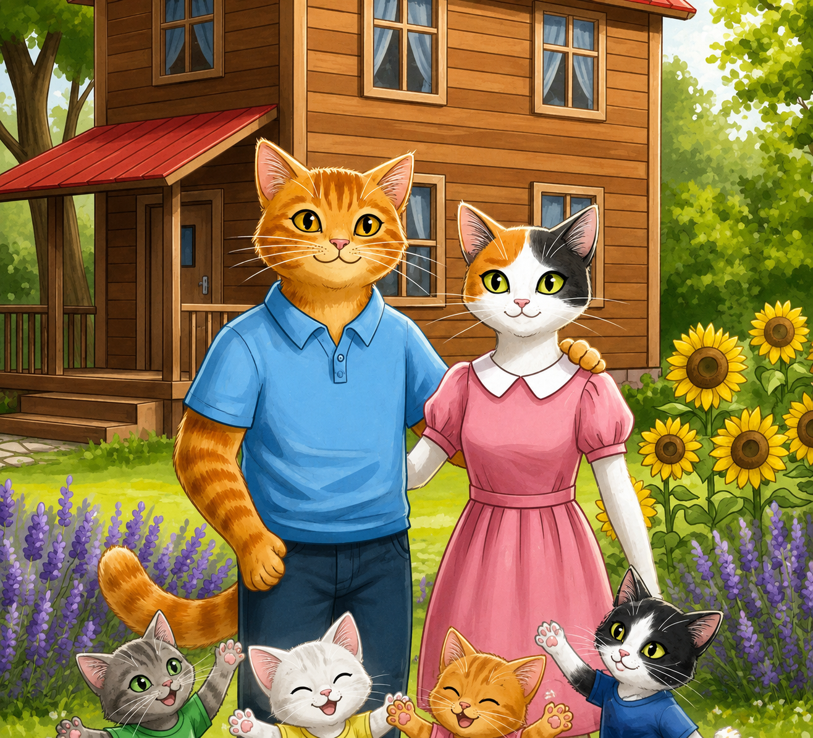
تأليف : شام أيمن عواد ✨
فلسطينية ✨
مواليد 2015 ✨
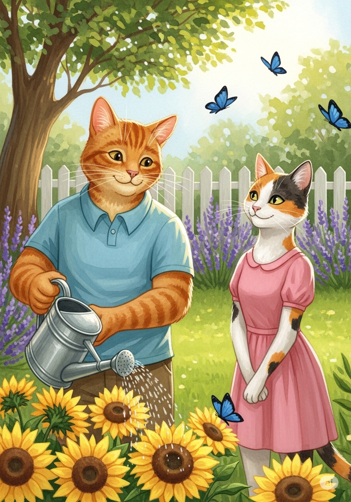
في ريفٍ جميلٍ و هادئ، تعيش عائلة من القطط السعيدة في بيتٍ خشبي صغير
الأب "مروان" والأم "ليلى" يحبان الاعتناء بحديقتهما الملونة، حيث تجري الفراشات بين الزهور الفواحة
كان الصباح يبدأ دائمًا بابتسامة دافئة منهما و هما يخططان ليومٍ مليء بالمرح مع صغارهما الأربعة.
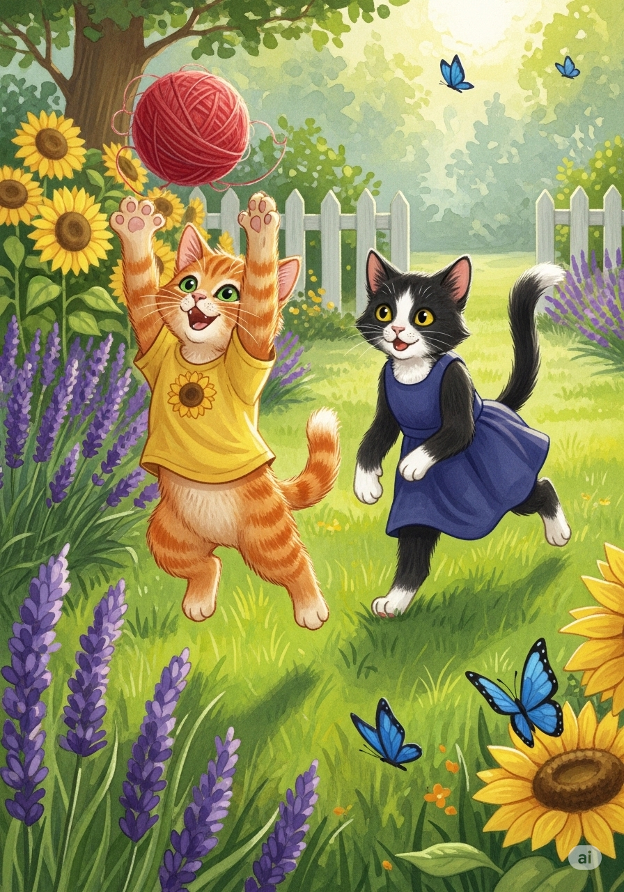
لدى مروان و ليلى أربعة قطط صغيرة :
الابن الأكبر "كوتو"،
و الأخت الوسطى "توتي"،
و الأخ الأصغر "قطوط"،
و الأخت الصغرى "كوتي".
كان "كوتو" و "توتي" يحبان قضاء وقتهما في الجري والقفز
في الباحة العشبية،
و يلاحقان كرات الصوف الملونة بكل نشاط وحيوية.
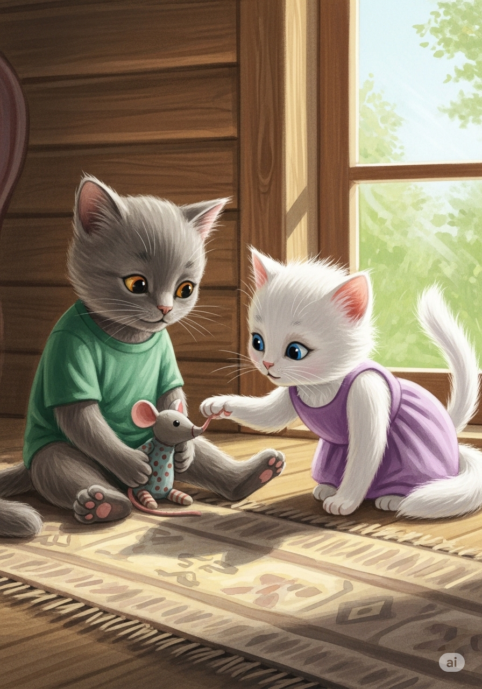
أما الصغيران "قطوط" و"كوتي" فكانا يملآن البيت بالضحك و المواء اللطيف.
كانت "كوتي" تحب مرافقة إخوتها في كل مكان،
بينما كان "قطوط"
يحب اللعب بألعابه الصغيرة،
لكنه كان يخشى شيئًا واحدًا فقط :
عندما يحين وقت غياب الشمس و حلول الظلام.
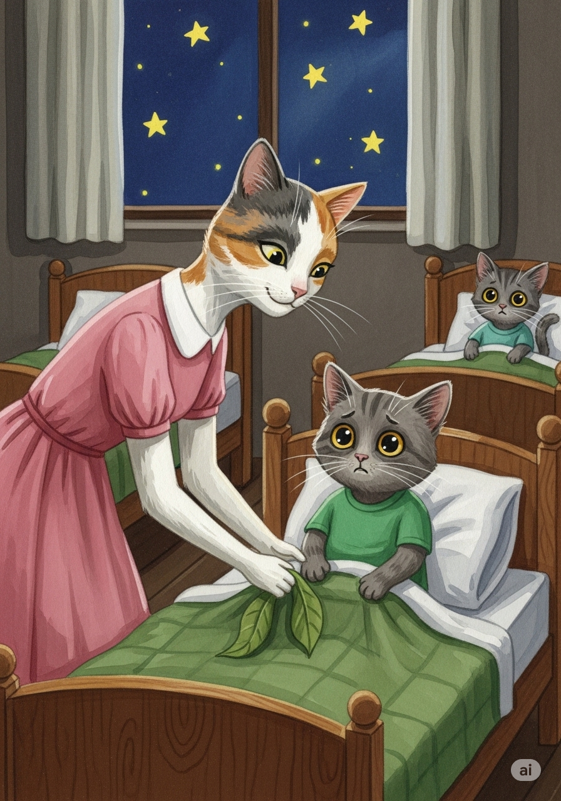
عندما غربت الشمس، ذهبت الأم "ليلى" لتغطية الصغار ببطانياتهم الدافئة.
قبلت الجميع و قالت:
"تصبحون على خير يا صغاري".
نام الجميع بسرعة، لكن "قطوط" كان يتقلب في فراشه.
كان يشعر بالخوف من الظلام و لا يريد أن يغمض عينيه أبدًا.
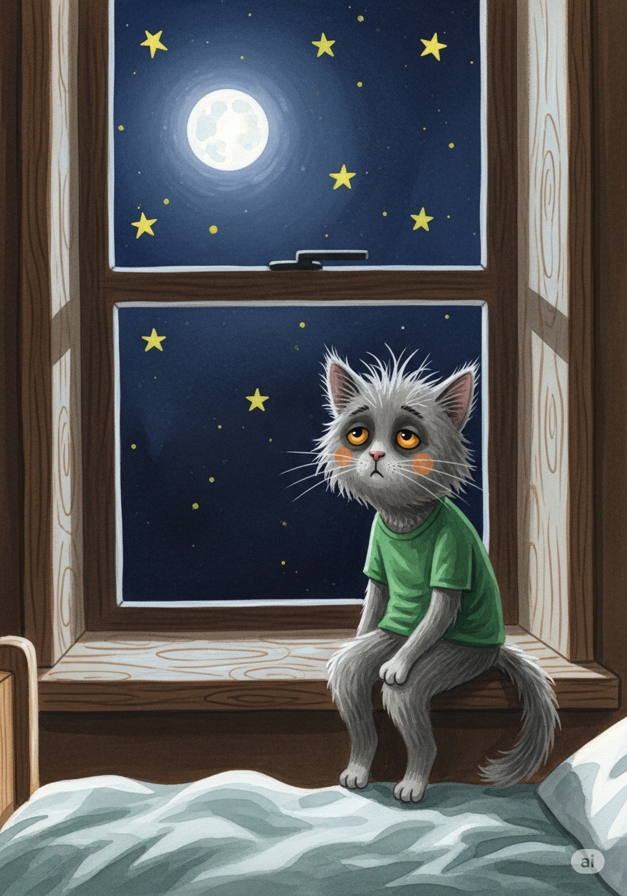
قرر "قطوط" ألا ينام.
جلس بجانب النافذة يراقب القمر والنجوم،
ويسمع أصوات الرياح و هي تصفر بين الأشجار.
استمر في السهر طوال الليل، يلعب بظله تارة
و يحدق في زوايا الغرفة تارة أخرى،
ظنًا منه أن السهر سيحميه من مخاوفه.
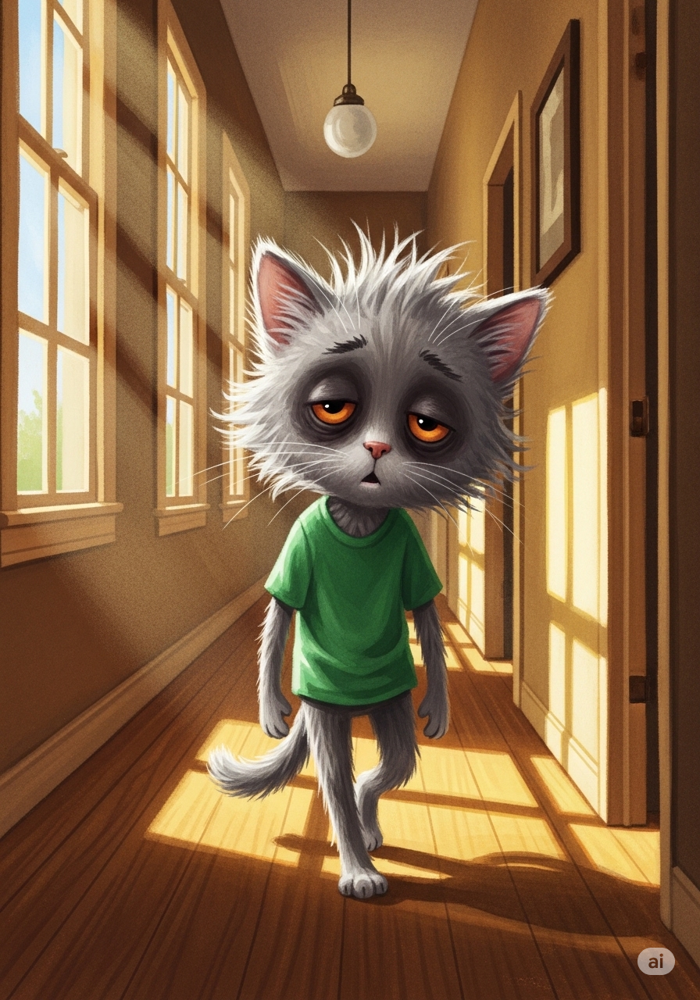
أشرقت الشمس وبدأ يوم جديد، لكن "قطوط" لم يكن يشبه نفسه إطلاقًا.
كان فروه منفوشًا و مبعثرًا، و عيناه سوداوان من شدة التعب.
كان يمشي ببطء شديد و هو يترنح يمينًا و يسارًا و كأنه يمشي و هو يحلم.
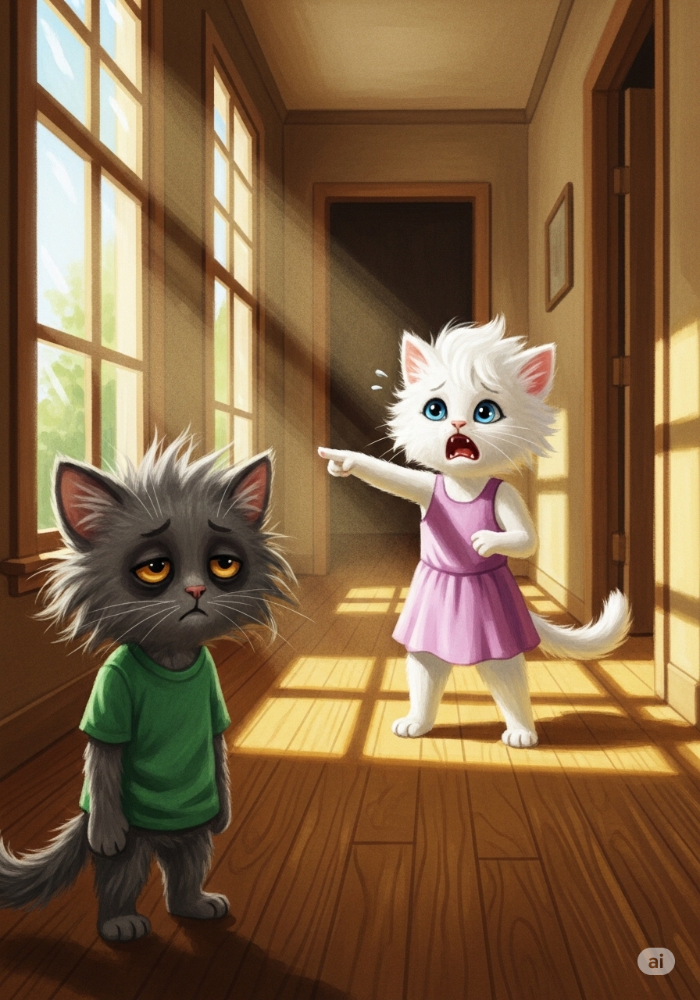
خرجت الأخت الصغيرة "كوتي" من غرفتها،
و عندما رأت "قطوط" المتعب صرخت بأعلى صوتها :
"وحش! وحش مرعب في بيتنا!"
ظنت أنه كائن غريب بسبب الهالات السوداء و شكله المبعثر،
فارتجفت من الخوف.
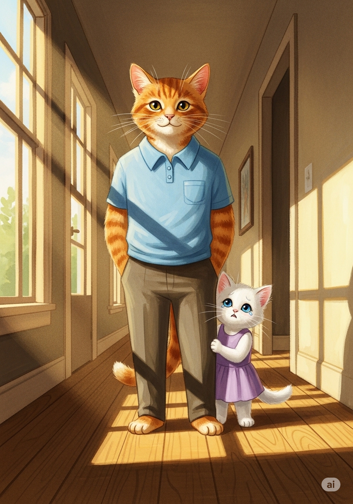
ركضت "كوتي" نحو الأب "مروان" و اختبأت خلفه و هي ترتجف من الرعب.
قالت و هي تبكي و تغطي وجهها :
"يا أبي، هناك وحش له عينان سوداوان و شعر مخيف يمشي في ممر بيتنا! أسرع يا أبي!".
تعجب الأب "مروان" و ذهب ليرى ما الذي أخاف صغيرته.
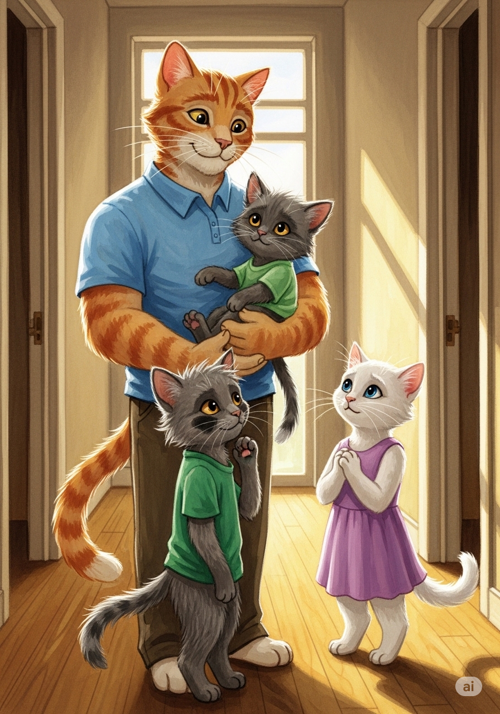
عندما وصل الأب إلى "الوحش"،
و جد "قطوط" و هو يحاول بصعوبة أن يفتح عينيه المتعبتين.
ضحك الأب بلطف و حمل "قطوط" بين ذراعيه الدافئتين.
قال لـ "كوتي": "لا تقلقي يا صغيرتي، هذا ليس وحشاً،
إنه أخوكِ قطوط الذي سهر طوال الليل و لم ينم".
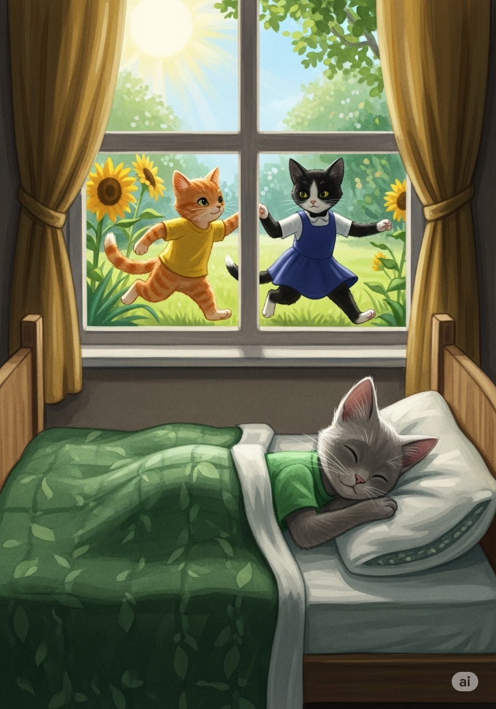
بينما كان كوتو و توتي يقفزان و يمرحان في الخارج تحت أشعة الشمس،
كان "قطوط" وحيدًا في سريره يحاول النوم ليعوّض ما فاته.
شعر "قطوط" بالندم لأن السهر جعله يضيع وقت اللعب.
و تعلم درسًا مهمًا :
النوم المبكر هو سر النشاط.
و وعد نفسه ألا يسهر مجددًا.